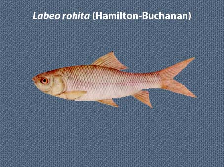

|
DIGITISED INVENTORY OF FRESHWATER FINFISHES AND SHELL FISHES OF INDIA |
Labeo rohita
Taxonomic
Details
----- Valid Name
----- Classification
----- Synonyms
----- Common Names
Other
Biological Details
----- Habit and
Habitat
----- Morphological
Features
----- Reproductive
Biology
---------- Breeding
season
---------- Breeding techinique
---------- Fishing methods
----- Biology
Stages of development:
Economic
Importance
----- Uses
----- Parts Used
Economic potenial to the country
----- ----- Fishery statistics
Miscellaneous Information
Literature
Name :Labeo rohita (Hamilton),1822

Family: Cyprinidae
Classification:
Phylum: Chordata Subphylum: Vertebrata
Class: Actinopterygii Subclass:Neopterygii
Division: Teleostei Subdivision: Euteleostei
SuperOrder: Ostariophysi Order:Cypriniformes
SubOrder: N.A. Family:Cyprinidae
Subfamily:Cyprininae
Synonyms: Labeo horai
Labeo rohita (Hamilton),1822
Rohita buchanani Valenciennes,1842
Cyprinus rohita Hamilton,1822
Rohita duvaucelli Valenciennes,1842
Common Names: Rohu
HABIT & HABITAT: Warm Water
Distribution :Freshwaters of Punjab, U.P., Bihar, W.B., Orissa,
Maharastra, Assam, MP, Narmada,Tapti and Mahanadi rivers.
MORPHOLOGICAL FEATURES: Body moderately elongate, its dorsal profile more arched than the ventral profile. Snout fairly depressed, projects beyond mouth, devoid of lateral lobe. Eyes large, not visible from underside of head, the diameter 4 to 6 times in head. Mouth small and inferior; lips thick and fringed, with a distinct inner fold to each lip. Barbels a pair of small maxillary barbels .
REPRODUCTIVE BIOLOGY: Rohu is heterosexual. Male and female sex recognised only when the former oozes milt on slight pressure on abdomen and the later shows bulged soft abdomen with extrovert swollen reddish vent, during breeding season. The pectoral fin, in mature male, is rough, slightly stouter and comparatively longer extending up to 8th or 9th lateral line scale. In female the pectoral fin is smooth 00 touch and short in size, and it reaches to 6th or 7th L.l. scale (Chaudhuri, 1959a). According to Khan and Hussain (1945), in identical-sized specimen, males have pectoral fin better developed and greater than the anal fin during breeding season, but in female, the pectoral fin is less than or equal to the anal. In a few female, the pectoral may be greater than anal, but the former is always less developed. 4.2.2 Maturity. Rohu normally attains maturity in the second year of life in Indian environment. Finely reared well-fed females are found to mature within 13 months under judicial management (Chandar, unpublished). Alikunhi (1957) observed that a certain percentage of both the sex reared in Cuttack ponds reached sexual maturity in one year only. Male matures in earlier age than female, and earlier during breeding season. In Bangladesh, rohu is reported to have matured at 3-4 years age group (Ali, 1957). The average size of maturity of the specimens from Cuttack pond was recorded as 292 mm/282 g in one pond and 348 mm/500 g in another, with one smallest ripe female was 260 mm/250 g (Sukumaran, 1969). Khan (1972) reported that the larger-sized individuals are found to mature earlier than the smaller ones. The minimum age at first maturity for both the sexes was age II while complete maturity was reached by males at age IV and by females at age V. 50% maturity point was 2.702 years for male and 2.937 years for female. The minimum size at first maturity of male was 462 mm and 100% maturity was found in 650 rom length group. The smallest mature female was 515 rom and all the females were matured in 700 mm length group. 50% maturity points were 548.97 mm and 579.59 rom for male and female, respectively. Seasonal cycle in gonad condition exhibited commencement of gonadal development in rohu during the month of February, reaching ripe stage during June-July, and finally spent individuals in late July and early August (Khan and Jhingran, 1975). According to Chandar (1980) rohu is in maturity stage! In December-January, stage II in January- February, III-IV stages by April, and IV-VI stages by May-June-July in eastern India. However, the process of advancement in gonadal maturity by at least 2-3 months through fine rearing of brood with balanced nutritous food, hormone treatment and maintenance of water quality has now a very successful teachnique practised among the progressive pisciculturists of West Bengal, India (Chondar, 1986d).
Breeding season:The natural
breeding of rohu occurs in river, reservoir and wet-bundh. The spawning takes
places once in a year during south-west monsoon during the months April/May-June
in Assam (Parameswaran et al., 1970), June- September in Aligarh (Khan,
1972), April-August in the Ganga system of north Bihar(David, 1959), July-Augustin
western Uttar Pradesh and Punjab (Khan, 1924, 1942), June-August in Orissa and
West Bengal (Das Gupta, 1945), April-June in the river Halda, Chittagong,
Bangladesh (Ahmad, 1948), July-August in the Ganga system at Aligarh of Uttar
Pradesh (Qasim and Qayyum, 1962). In the nature, the breeding of rohu is
normally seen at late night or during daytime in cool weather. Alikunhi et
at. (I964b) observed active spawning of rohu and mrigal commencing in the
morning and continuing up to evening in the bundhs of Madhya Pradesh.
Gopalakrishnan et ql.(I964) noted breeding of major carps including rohu
at the head waters of Tilaiya reservoir during night which continued till the
next evening. A chain of interrelated factors, as has been discussed in detail
under catla, are responsible for natural breeding of rohu. Breeding grounds are
found in the middle reaches of most of the Indian rivers, where flood water
spreads in more or less limpid shallows over fertile flats, well above tidal
reaches (Khan and Jhingran, 1975). In stagnant water, rohu do not breed in
normal course, except in some rare cases where natural breeding is reported to
have been occurred in ponds after continuous showers and sudden inundation of
the adjacent areas.
Breeding techinique: Chaudhuri (1960) achieved first success in induced breeding of rohu in pond with homoplastic pituitary extract in 1957. The general doses of fish pituitary recommended for female are: 2-3 mg/kg and 6-7 mg/kg in the first and second injections, respectively at an interval of 4-6 hours. In favourable weather with heavy showers and low temperature a knock-out dose of hypophysis @ 6-8 mg/kg to female and 1-2 mg/kg to male is very effective (Chandar 1980). The centrifused human pregnancy urine with a threshold dose of carp pituitary induced spawning of one set of rohu (Ranganathan et al., 1967). 4 mg of fish pituitary and 25 RU of synahorin/kg resulted inducement of rohu breeding (Jhingran, 1969). The mass breeding of rohu together with catla and mrigal has been taken in bundh with injection of crude (Activity 30 IU/mg) HCG 70% + fish PG 30%, the details of which are mentioned under Section4.2.6 of the Chapter Catla catla (Chandar, 1984). The repeated breeding of this species in confinement is also in practice now-a-days among the progressive pisciculturists of West Bengal, and the breeding of the same individuals could be taken twice or thrice within the same breeding season after an interval of2-3 months, when first breeding is made in February-April, second in May-June and third breeding in July-August following the method of estrualisation and applying inducing agent (Chandar, 1986d). The diploid-tetraploid mosaics could be induced in ruhu by exposing the fertilised eggs to colchine solution (0.01%) for a certain period begining 25 minutes after fertilisation till the blastula stage, and thereafter the eggs were transferred to ordinary water. The hatchlings so produced were reared for about 50 days before release the fingerlings into ponds for culture. The percentage of polyploid (tetraploid) cells ranged from 17.65 to 20.00 (Reddy et al., 1987). The tetraploid rohu grows faster and larger than the normal diploid.
Fishing methods: Different types of nets and traps (for details refer Section 3.1 of the Chapter Calla calla) are used for fishing rohu throughout the year (except in monsoon months when close season is declared for fishing Indian major carps in the river). The method of fry col1ection from rivers and bundhs are same as practiced in the case of other carps. Pond fishing is done throughout the year and mainly the cast net and the dragnet are used.
BIOLOGY:Being a column feeder harbivore with quick growing
nature in terms of flesh return, rohu is considered to be a very useful
compatible member of 6-species composite fish culture of Indian and Chinese
carps to produce maximum yield. Rohu produces maximum eggs per unit body weight
among the three main species of Indian major carps. They breed well in bundh-tank
and in confinement under the influence of hormone injection. Though they are not
normally available in the low saline water, but adult fish can thrive and grow
in the pond up to a salinity level 14%0 (Saha etal., 1964). The salinity
tolerence of fry and fingerlings has been recorded to be : (i) at 17 mm average
length -3.28%0 but showed extreme restlessness and apathy for food at 7 .9%°'
and ultimate death with further rise up to 10%0; and (ii) at 26 mm average
length -up to 10%0 with 50% mortality, and at 13%0f total mortality (Ghosh
et al., 1972). They move in small shoals in fry and fingerling stages mainly
for the feeding purpose, while the adults migrate in batches during spawning.
Like catla and mrigal, rohu is also a local migrant and undertake short journey
in search of suitable breeding grounds. The sex ratio is almost 1: 1
(Khan, 1972), but during breeding months the mature females are found more in
number than males. Rohu does not show any parental care. They are vary hardy in
nature and provide good sports to rod-anglers. Rohu is afflicated by a variety
of parasites and diseases, viz., Aeromonas sp., S. parasitica, M
catlae, T. seni, B. rebae, T. indica, S.pyriformis, I. multifilis, E.batai, L.
chackoensis, L. intestinalis andA. acanthogyrus.
Back to Top
Stages of development: Mookerjee (1945a) and Chakrabarty and Murty (1972) have given description on the embryonic development of the fertilised eggs of rohu. Chaudhuri (1968) stated about the incubation period in rohu being 15-20 hours at a water temperature ranging 24-31°C. Embryonic development Mookerjee (1945a) Chakrabarty and Murty (1972) Segmentation of eggs regular. First clevage after 35 min. of First clevage in 45 min., followed by second clevage fertilisation. The 8-celled, 16-celled and 32-celled stages appear within next 5- 7 min. The 8-celled stage at 65-77 min. pearedat 1 h 10 min., I h 35 min., and 2 h 10 min. respectively. Yolk invasion half completed in 2 h and yolk-plug Completion of yolk invasion and formation of blastopore at 5 h 45 stage reached after 3 h. Yolk-mass starts elongating min. The embryonic rudiment appeared at 8 h. Appearance of 17 in 5 h, followed by the appearance of myotomes in myotomes and of kupffer's vesicle and movement of embryo 6 h. Head and tail regions formed. At 5h, optic commenced at 9 h. Optic rudiment seen at 15 h 5 min. Pulsation rudiment appeared and 7-10 myotomes also formed. of heart begins after 15 h 20 min. Appearance of otocyst rudiment, The incubation period is 14-17 h at 23-28°C temper- pectoral fin buds, and gill rudiment at 13 h 20 min, 14 h 30 min, ature of water. and 15 h 50 min, respectively. Period of incubation at 17 h 15 min. Larval development A detail account on the larval development of rohu has been given by Mookerjee (I 945a), Kamal (I 967b), Chakrabarty and Murty (1972) and Chondar (1980) for the specimens obtained from different eco-environment. Newly hatched larva (Fig. 19a). Total length, 3.62-3.83 mm, ova 3.78 mm (Chakrabarty and Murty, 1972),4.3 mm (Kamal, 1967b), 3.3-4.5 mm (Chondar, 1980). Length of yolk-sac, 2.52 mm. Maximum height of the yolk-sac, 0.72 mm. Height of body at pectoral level, 0.90 mm. Diameter of eye, 0.18 mm. Length up to hind tip of notochord, 3.62 mm. Body slender, transparent. Mouth in form of small notch just above the yolk-sac, closed. Eyes conspicuous, transparent, faint yellowish colour. Rudiments of otocyst, gill-slits and pectoral fin buds conspicuous. Large oval-shaped yolk-sac with a posterior elongation, the anterior bulbous part and the posterior tubular part equal in length. The ventral profile of the bulbous part shallowly curves to the tubular part showing no constriction at the junction. 26 pre anal and 14 post anal myotomes in most of the hatchlings (Chakrabarty and Murty, 1972). Hatchlings are not active, only occasionally swim up and immediately drop down to settle-. Larva, 6 hours after hatching. Total length, 4.62-4.78 mm, av. 4.70 mm. Length of yolk-sac, 2.94 mm. Maximum height of yolk-sac, 0.70 mm. Height of body at pectoral level, 1.00 mm. Diameter of eye, 0.20 mm. Length up to hind tip of notochord, 4.50 mm. Chromatophores not yet appeared on the body. Eyes turned yellowish brown. Yolk-sac increased in length, but reduced in height. Occasional vertical movement. Larva, 12 hours after hatching. Total length, 5.22-5.40 mm, av.. 5.31 mm. Length of yolk-sac, 3.15 mm. Maximum height of yolk-sac, 0.75 mm. Diameter of eye, 0.27 mm. Length up to hind tip of notochord, 5.04 mm. Chromatophores appeared on the eyes only, being black at the centre. Yolk-sac further increased in length, but considerably reduced in height, becoming somewhat narrower. Occasional vertical movement. Larva, I-day-old (Fig. 19b). Total length, 5.25-5.84 mm, av. 5.49 mm. Length of yolk-sac, 2.79 mm. Maximum height of yolk-sac, 0.45 mm. Diameter of eye, 0.28 mm. Length up to hind tip of notochord, 5.35 mm. Embryo pale yellow in colour. A few black chromatophores appeared on the head above eyes. Black spot-like at the centre of the eyes. Mouth opens, slit-like. Auditory concretions clear. Yolk-sac reduced in length and height, becoming further narrower. Pectoral without rays. Embryonic fin-fold still continuous, but some striations seen in the caudal. Notochord tip turned upwardly directed (Chakrabarty and Murty, 1972). Periodic slow jerky movement Larva, 2-day-old . Total length, 6.07-6.33 mm, ova 6.20 mm (Charkrabarty and Murty, 1972),5.9-6.8 mm (Chondar, 1980). Length of yolk-sac, 2.90 mm. Maximum height of yolk-sac, 0.36 mm. Diameter of eye, 0.30 mm. Length up to hind tip of notochord, 5.80 mm. Embryo yellow in colour. Large black prominent chromatophores on head, a few black more on the head, behind the eyes, and in the auditory region, and a row of black chromatophores from the area posterior to the auditory concretions up to the base of the caudal fin. Mouth moves upward assuming in sub-terminal position. Yolk-mass considerably reduced, the bulbous part narrows to a tube. The anterior profile of yolk sac convex. Air-bladder elliptical, distinct. Pectoral fin prominent. Ventral embryonic fin originates in advance of the caudal fin-fold (Chakrabarty and Murty, 1972). Gills prominent with 4 arches and 11 filaments (Kamal, 1967b). Larva somewhat active with lateral jerky movement at times. Larva,3-day-old (Fig. 1ge). Total length, 6.0 mm (Kamal, 1967b), 6.95 mm (Chakrabarty and Murty, 1972),6.4-7.0 mm (Chondar 1980). Body pale yellow, the dorsal profile bright yellow till the anal region, caudal region above the notochord yellow. Black chromatophores on the head with a few in between the eyes. No reddish glow on the opercular margin. The tube-like yolk-mass disappearing (Chakrabarty and Murty, 1972). Intestine straight, narrow, tube-like, almost half of the total length of the larva. Embryonic fin-fold continuous.Postlarva, 4-day-old . Total length, 7.57 mm (Chakrabarty and Murty, 1972),7.0-8.1 mm (Chondar, 1980). Distinct black chromatophores behind the eyes on the head region. Well defined crescent-shaped areas in the caudal region below notochord fonned of closely-placed black chromatophores in straight-line rows. Yolk completely disappeared Lips fimbriating Opercular out line distinct. Notochord bent at the tip. Embryonic fin-fold persisted. A red streak (Chakrabarty and Murty, 1972) at the commencement of the ventral fin-fold and little above the anus in majority. Post larva, S-day-old . Total length, 6.9 mm (Kamal, 1967b), 8.50 mm (Chakrabarty and Murty, 1972),8.0- 9.0 mm (Chondar, 1980). Air-bladder covered partly with black chromatophores. No chromatophores on the embryonic iii-fold. 8-10 rays of caudal fin branching distally .Dorsal fin rudiment indicating from the embryonic fin-fold. Distinct red colouration in the abdominal region in majority (Chakrabarty and Murty, 1972 ; Chondar,' 1980). The intestine increases in length with one coil appearing. Gill filaments increased to 13; gill rakers 10-11 (Kamal, 1967b). Post larva, 6-day-old (Fig. 19h). Total length, 10.0-10.5 mm (Chakrabarty and Murty, 1972),9.0-11.0 mm (Chondar, 1980). Diameter of eye, 1.0mm(Mookerjee, 1945a), gape of mouth, 1.7mm(Mookerjee, 1945a). Colour light yellowish oil-green on the back. Fins white or light grey (Mookerjee, 1945a). Dorsal. fin-rays 9. Anal fin bud with faint rays. Pelvic fin bud seen. Maxillary barbel appearing at closer to the junction of the two lips. The pigmentations at the base of the caudal fin taking the shape of two spots with a colourless region in between the two spots.Faint chromatophores gathering at the caudal base in somewhat perpendicular manner (Chakrabarty and Murty, 1972; Chondar, 1980). Post larva, 7-day-old (Fig. 19i). Total length, 9.0 mm (Kamal, 1967b), 11.0 mm (Chakrabarty and Murty, 1972), 11.0- 12.0 mm (Chondar, 1980). Both jaws almost equal. Lips thick and fringed. Notochord sharply bending upward. Caudal fin less deeply forked and with 22 branched rays. Pelvic fin with 2-3 rays. Dorsal fin with 2-11 rays (Chakrabarty and Murty, 1972). Intestine further elongated forming two folds. Number of gill filaments increased to 13-15 (Kamal, 1967b).
Uses: In
proportion it is next to catla but in the market it fetches more price than any
other fish because of the value of its flesh as food. The Rohu of the river is
more active and stronger than that of the tank. Rohu is regarded an excellent
game fish and seems to put up a better fight in a river than in a tank. A light
hook with a bit of weed as bait is good for this species.
Parts Used: Economic
potential to the country
Fishery statistics:-
Total Production (in percentage) of Rohu in India
|
Year |
Production ( in %) |
|
1972-73 |
2.9 |
|
1973-74 |
3.8 |
| 1974-75 |
6.2 |
| 1975-76 |
14 |
| 1976-77 |
27.2 |
|
1978-79 |
6.0 |
|
1980-81 |
12 |
| 1984-85 |
2.3 |
| 1986-87 |
20.6 |
| 1987-88 |
8.8 |
| 1988-89 |
6.1 |
| 1990-91 |
4.2 |
| 1991-92 |
2.2 |
| 1992-93 |
16.4 |
| 1993-94 |
0.7 |
| 1994-95 |
13.5 |
| 1995-96 |
10.5 |
| 1996-97 |
6.3 |
| 1997-98 |
7.4 |
| 1998-99 |
5.7 |
| 2000-01 |
6.3 |
State wise Landing of Major Carps During 1991-94 (in tonnes)
|
Landing of Major Carps in tonnes |
||||
|
Year |
1991 |
1992 |
1993 |
1994 |
|
State |
||||
| Andhra Pradesh | 52624 | 52624 | - | - |
| Arunachal Pradesh | 276 | 276 | - | - |
| Assam | 124850 | 124850 | - | - |
| Bihar | 94092 | 93840 | - | - |
| Gujrat | 8724 | 11142 | 15440 | 16180 |
| Haryana | 13150 | 13150 | 7878 | 9200 |
| Himanchal Pradesh | 301 | 254 | 259 | 203 |
| Karnataka | 64343 | 65704 | 74632 | 70288 |
| Kerala | 1530 | 1530 | 2002 | 1715 |
| Madhya Pradesh | 40541 | 37892 | - | - |
| Maharashtra | 64849 | 66021 | - | - |
| Manipur | 2850 | 2850 | - | - |
| Meghalaya | 1155 | 1633 | - | - |
| Mizoram | 1850 | 1980 | 1800 | 1500 |
| Nagaland | 635 | 630 | 850 | 1100 |
| Orrisa | 36502 | 41470 | 71038 | 78286 |
| Punjab | 4800 | 5700 | - | - |
| Rajasthan | 4015 | 5807 | 10590 | 10693 |
| Tamil Nadu | 16150 | 18050 | 20035 | 20410 |
| Tripura | 15692 | 16929 | 12032 | 18341 |
| Uttar Pradesh | 113307 | 121433 | - | - |
| West Bangal | 236300 | 121433 | - | - |
| Andaman Nikobar | 17 | 28 | - | - |
| Chandigarh | 20 | 20 | - | - |
| Dadra & NagarHavali | 12 | 12 | - | - |
| Delhi | 1800 | 1900 | - | - |
| Pondicherry | 495 | 594 | - | - |
Reservoir-wise landing of Labeo rohita
| Year | 1971-72 | 1972-73 | 1973-74 | 1974-75 | 1975-76 | 1976-77 | 1977-78 | 1978-79 | 1979-80 | 1980-81 | 1981-82 |
| Reservoir | |||||||||||
| Bavanisagar(t) | - | 1.406 | 1.813 | 1.794 | 4.809 | 22.6 | 25.6 | 6.613 | 8.392 | 16.212 | - |
| Nagarjunsagar(kg.) | 640 | 50 | - | - | 1332 | 1412 | 1179 | 1398 | 4877 | - | - |
| Ukai(t) | - | - | - | - | 124.58 | 73.55 | 45.59 | 55.49 | 33.12 | 91.9 | 20.1 |
| Year | 1973 | 1974 | 1975 | 1976 | 1977 | 1978 | 1979 | 1980 | 1981 | 1982 | 1983 | 1984 | 1985 |
| Reservoir | |||||||||||||
| Govindsagar(kg.) | - | 13355 | 87775 | 96045 | 112798 | 190237 | 91047 | 108332 | 30416 | 24267 | 8498 | 9081 | 1757 |
| Hirakud(t) | - | - | - | - | - | 49.6 | 27.6 | - | - | - | - | - | - |
This graceful riverine fish is one of the major
carps of India. Rohu is the natural inhabitant of freshwater sections of the
rivers of north India, the rivers Narmada, Tapti and Mahanadi in central India
and rivers of Pakistan, Bangladesh, Burma and Terai region of Nepal. It has been
transplanted into some of the rivers of peninsular India, Andai Pans and Powai
lake, Bombay. Rohu has also been transplanted to Sri Lanka. Mixed with the seed
of catla and mrigal, rohu has been exported to the U.S.S.R., Japan, Philippines,
Malaysia, Nepal and some countries of Africa, during the years 1957 to 1970.
Rohu thrives well in all freshwaters below an altitude of approximately 549
m. Rohu is a bottom feeder and prefers to feed on plant matter including decaying
vegetation. Rohu attains maturity towards the end of the second year in ponds.
The spawning season of rohu generally coincides with the southwest monsoon.
Spawning takes place in flooded rivers. The fecundity of rohu varies from
226,000 to 2,794,000, depending upon the length and weight of the fish and
weight of the ovary. The spawn of this fish is collected from rivers during
monsoon and reared in tanks and lakes. The spawn of this fish is sought after.
It attains a length of about a meter. A number of inter specific and inter generic
hybrids have been produced. The most promising inter generic hybrid, male Catla x
female Rohu combines the quick growth of catla and small head of rohu.
1.Talwar, P.K. and A.G. Jhingran., 1991. Inland Fishes Of India & Adjacent Countries, vol. 1 & 2.
Oxford & B H Publishing Co.Ltd.
2.Jhingaran, V.J. 1991. Fish And Fisheries Of India. Hindustan Publishing Corporation Delhi,
(India).
3.CICFRI , Bul.No.66,April 1992.
4.Vol 23 No.6 September 2003 (Fishing chimes)